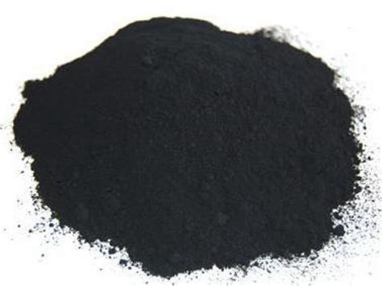

Gunpowder!

Goes boom!
So, my little anarchist, you want to make some things go BOOM?
Then I'm glad you came across this website, because you'll learn how to make a gunpowder!
Here are some of the ingridients you would need:
- Stick x1
- 15 carrat diamond x2
- Your grandfather's workbench
- Sapper suit
I hope you got all the stuff to get some gundpowder! But a quick warning:
Gunpowder is highly explosive! Don't just get it because you can! And procces of getting it is extremely dangerous!
So, here are the steps to get some explosive sand:
- Wait until midnight
- Using your stick and two diamonds craft a sword
- Put on sapper suit
- Whilst equiped with a sword go outside into the darkness. You are looking for a green penis-shaped hellish abomination.
- If you found one, try to sneak up to it and quickly slay with your sword. Beware, that green thing would and will explode when provoked
- If you didn't found one of them, keep looking. They appear only in full darkness.
- After you killed one of them, they will turn into pure black gundpowder
- Enjoy making TNT with it and some sand! Beware of admins and mods, they could ban you if you overdo the BOOM part.
Go back to recipes